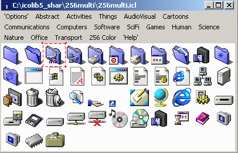
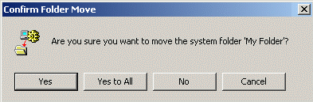

Changing Desktop Icons
Top
Drives
Folders
Files
Shortcuts
System
Folders
You can change the icon for individual folders by following these steps.
- Chose a folder for which you want to change the icon, for example...
- Create a file called Desktop.ini in the folder (My Folder)
for which the icon is to be changed. In this file add the following lines...
[.ShellClassInfo]
IconFile=c:\icolib5_shar\256multi\256multi.icl
IconIndex=2
InfoTip=New Icon in this folder
For this example I am using the 3rd icon, as specified by the
IconIndex parameter (count starts at 0), in this Icon Library
category.

- You may want to make the Desktop.ini into a hidden file so it
is not accidently deleted. Right click on the Desktop.ini file and
select the Properties option at the bottom of the popup menu.
Select the Hidden attribute and click OK.
- The final step is to make the folder into a System Folder. You
can only do this from a DOS window. You can open a DOS window by selecting the
Run option from the Start button menu. Type command into the
input field and click the OK button and a DOS window should appear.
For this example, type attrib +s "c:\tmp3\My Folder" to convert
My Folder into a system folder.
- The icon for the folder should now have been changed wherever it appears.
- There is a small side effect in changing your folder into system folder.
If you try to move the folder to another location, you will get this warning

Unless the folder is a real system folder, just click the
Yes button.
- It is probably a good idea to have a single directory, for example,
c:\icons where you store any icon you use elsewhere in your system.
- I believe that Windows XP users can change folder icons simply by using
the Properties menu for the folder.
- You can now try changing the icons for some of your
Files.